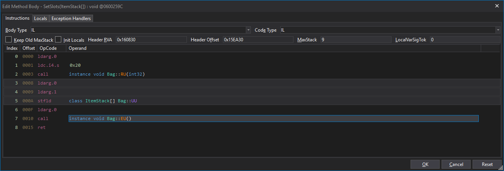
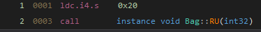
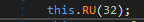

Let's take a closer look at the "Edit IL" window.
The IL stands for Intermediate Language. Since we are using .NET and C#, it's actually fully called CIL, or Common Intermediate Language. It's common because all .NET languages compile into it, regardless if it's C# or VB .NET.

The Instructions tab is what shows default, and really the only tab that we are interested in.
And precisely what we are interested in is the OpCode and the Operand. The index just shows the order of the call.
The OpCode is the "machine language" of the computer, and specifies what kind of operation it does.
Operand is the value of that instructions. In some cases, there's OpCodes that do not have an Operand.
Reading IL is a bit counter intuitive.
For example, let's look at Index 1 and 2:
IL View:

Code View:

This is showing 0x20 (Decimal 32), and a method call to Bag::RU.
From the call line, we see that the Bag::RU takes an int32 value. The line above, we see ldc.i4.s, which is an OpCode for int32. When we look at the IL, we set, or "push" the value we want on the stack first, then we tell it which method to call.
In order words, when we are speaking the IL language, we are saying this:
"Push 0x20 into position so that we can pass it to the Bag::RU method".
When we are speaking the C# language, we are saying this:
"Call Bag::RU() and pass in the number 32.
Created with the Personal Edition of HelpNDoc: Full-featured Kindle eBooks generator